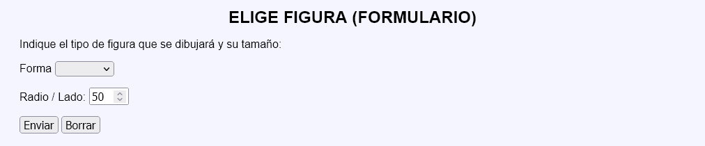
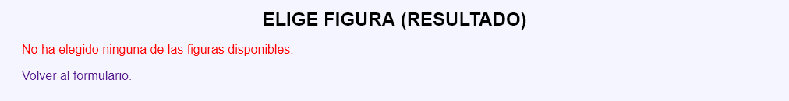
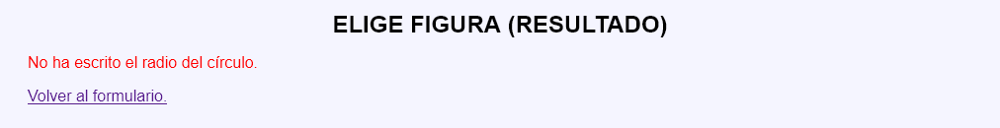
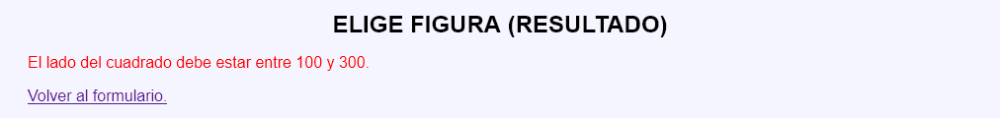
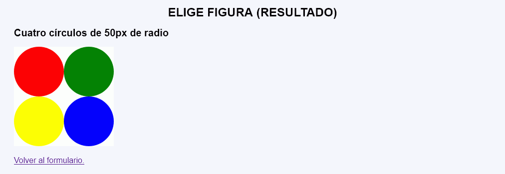
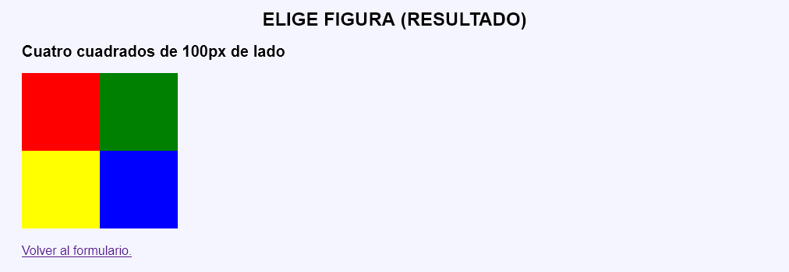

Elige figura y tamaño - Ejemplo de programa
Nota: El día del examen los alumnos no tienen acceso a este ejemplo, solamente tienen acceso a las capturas del apartado anterior.
Un ejemplo de programa puede probarse en la ventana siguiente:
En este ejercicio se debe crear un programa que muestre un dibujo formado por cuatro figuras de la misma formas y tamaño, indicados por el usuario, y de distinto color.






<h2>Cuatro círculos de 50px de radio</h2>
<p>
<svg version="1.1" xmlns="http://www.w3.org/2000/svg"
width="200" height="200" style="background-color: white;">
<circle cx="50" cy="50" r="50" fill="red" />
<circle cx="150" cy="50" r="50" fill="green" />
<circle cx="50" cy="150" r="50" fill="yellow" />
<circle cx="150" cy="150" r="50" fill="blue" />
</svg>
</p>
<h2>Cuatro cuadrados de 100px de lado</h2>
<p>
<svg version="1.1" xmlns="http://www.w3.org/2000/svg"
width="200" height="200" style="background-color: white;">
<rect x="0" y="0" width="100" height="100" fill="red" />
<rect x="100" y="0" width="100" height="100" fill="green" />
<rect x="0" y="100" width="100" height="100" fill="yellow" />
<rect x="100" y="100" width="100" height="100" fill="blue" />
</svg>
</p>
Nota: El día del examen los alumnos no tienen acceso a este ejemplo, solamente tienen acceso a las capturas del apartado anterior.
Un ejemplo de programa puede probarse en la ventana siguiente: